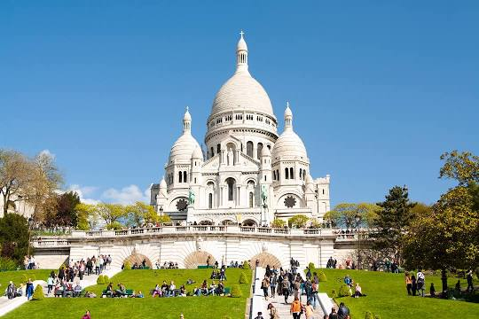

The Eiffel Tower is a wrought-iron lattice tower on the Champ de Mars
in Paris, France. It is named after the engineer Gustave Eiffel, whose
company designed and built the tower. Locally nicknamed "La dame de
fer", it was constructed from 1887 to 1889 as the centerpiece of the
1889 World's Fair and was initially criticised by some of France's
leading artists and intellectuals for its design, but it has become a
global cultural icon of France and one of the most recognisable
structures in the world. The Eiffel Tower is the most visited monument
with an entrance fee in the world; 6.91 million people ascended it in
2015. It was designated a monument historique in 1964, and was named
part of a UNESCO World Heritage Site in 1991. The tower is 330 metres
tall, about the same height as an 81-storey building, and the tallest
structure in Paris. Its base is square, measuring 125 metres on each
side. During its construction, the Eiffel Tower surpassed the
Washington Monument to become the tallest human-made structure in the
world, a title it held for 41 years until the Chrysler Building in New
York City was finished in 1930.

The Louvre, or the Louvre Museum, is the world's most-visited museum,
and a historic landmark in Paris, France. It is the home of some of
the best-known works of art, including the Mona Lisa and the Venus de
Milo. A central landmark of the city, it is located on the Right Bank
of the Seine in the city's 1st arrondissement. At any given point in
time, approximately 38,000 objects from prehistory to the 21st century
are being exhibited over an area of 72,735 square meters. Attendance
in 2021 was 2.8 million due to the COVID-19 pandemic. The museum was
closed for 150 days in 2020, and attendance plunged by 72 percent to
2.7 million. Nonetheless, the Louvre still topped the list of
most-visited art museums in the world in 2021. The museum is housed in
the Louvre Palace, originally built in the late 12th to 13th century
under Philip II. Remnants of the Medieval Louvre fortress are visible
in the basement of the museum. Due to urban expansion, the fortress
eventually lost its defensive function, and in 1546 Francis I
converted it into the primary residence of the French Kings. The
building was extended many times to form the present Louvre Palace.

The Palace of Versailles is a former royal residence located in
Versailles, about 12 miles west of Paris, France. The palace is owned
by the French Republic and since 1995 has been managed, under the
direction of the French Ministry of Culture, by the Public
Establishment of the Palace, Museum and National Estate of Versailles.
15,000,000 people visit the Palace, Park, or Gardens of Versailles
every year, making it one of the most popular tourist attractions in
the world. Due to the COVID-19 pandemic, the number of paying visitors
to the Château dropped by 75 percent from eight million in 2019 to two
million in 2020. The drop was particularly sharp among foreign
visitors, who account for eighty percent of paying visitors. Louis
XIII built a simple hunting lodge on the site of the Palace of
Versailles in 1623 and replaced it with a small château in 1631–34.
Louis XIV expanded the château into a palace in several phases from
1661 to 1715. It was a favorite residence for both kings, and in 1682,
Louis XIV moved the seat of his court and government to Versailles,
making the palace the de facto capital of France.

The Basilica of Sacré Coeur de Montmartre, commonly known as
Sacré-Cœur Basilica and often simply Sacré-Cœur, is a Roman Catholic
church and minor basilica in Paris, France, dedicated to the Sacred
Heart of Jesus. Sacré-Cœur Basilica is located at the summit of the
butte of Montmartre. From the dome, two hundred meters above the
Seine, it is possible to see all of Paris, and the countryside for
fifty kilometres around. It is the second-most visited monument in
Paris, after the Eiffel Tower. Sacré-Cœur Basilica has maintained a
perpetual adoration of the Holy Eucharist since 1885. The Basilica was
first proposed by Felix Fournier, the Bishop of Nantes, on 4 September
1870, following the defeat of France and the capture of Napoleon III
at the Battle of Sedan, in the Franco-Prussian War, and six months
before the Paris Commune. He blamed the defeat of France upon the
"moral decline" of France since the Revolution, and proposed a new
Paris church dedicated to the Sacred Heart of Christ. The site chosen
was the butte of Montmartre, overlooking the whole city, and the
traditional location of the martrydom of Saint Denis, the patron saint
of Paris.

The Arc de Triomphe de l'Étoile is one of the most famous monuments in
Paris, France, standing at the western end of the Champs-Élysées at
the centre of Place Charles de Gaulle, formerly named Place de
l'Étoile—the étoile or "star" of the juncture formed by its twelve
radiating avenues. The location of the arc and the plaza is shared
between three arrondissements, 16th, 17th, and 8th. The Arc de
Triomphe honours those who fought and died for France in the French
Revolutionary and Napoleonic Wars, with the names of all French
victories and generals inscribed on its inner and outer surfaces.
Beneath its vault lies the Tomb of the Unknown Soldier from World War
I. The central cohesive element of the Axe historique, the Arc de
Triomphe was designed by Jean Chalgrin in 1806; its iconographic
programme pits heroically nude French youths against bearded Germanic
warriors in chain mail. It set the tone for public monuments with
triumphant patriotic messages. Inspired by the Arch of Titus in Rome,
Italy, the Arc de Triomphe has an overall height of 50 metres, width
of 45 m and depth of 22 m, while its large vault is 29.19 m high and
14.62 m wide.